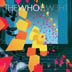
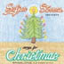
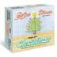

December 21, 2006
We took a break in November, and now are back at the end of the year with some amazing goodies for all of you. We hope to be posting many and sundry lists and rants on the state of music in 2006 and what was the best, what was the worst, what rocked hard and what was just crazy. As I sit here typing the first real snow has just started to fall here in Minneapolis, the Rolling Stones Their Satanic Majesties Request is on the stereo, and an eery feeling that perhaps Christmas is really on its way, and yet another year is about to fall behind us. Winter starts tomorrow, and I cannot help to think that when spring arrives, so will a riotous year of tunes.
Two thousand and six was a good year for music. I say that having listened to one hell of a lot of records this year. I found that in general it seemed that a shift in pop music is slowly taking place. The Shins were on the cover of Filter and Magnet magazines, and had a big feature in PASTE all in anticipation of their forth-coming third release. In Minneapolis, thanks mostly to 89.3 the Current, the mainstream radio stations are playing an increasing number of lesser-known tracks to try and garner some listeners back, having had them jump ship two years ago when the current first hit the waves (for those of you unfamiliar, 89.3 is a Minnesota Public Radio station which plays mostly emerging artists, indie-rock, and a remarkable plethora of local music). All of this bodes well for 2007 and I cannot wait to hear and see what is in store for us all musically. On that note, merry christmas, happy holidays and have a happy new year. Please enjoy the selected works we have collected this month. We have people writing about what mattered to them in music in 2006 and I hope you get to learn something new, find someone who shares your opinion, or just decide to go out and buy a new record.
These last couple of months for me have not included much new material, besides the Who, Sufjan and Chris Koza. They have instead consisted of me sorting through my music library and picking out discs I perhaps have not listened to in some time. Occasionally there appears to be reason for it, but mostly discs just get dusty because of new things taking their place. Not better things, just fresh, unfamiliar things which are more exciting to listen too. Then those too become replaced and the cycle continues. Since I decided to hole myself up into my apartment for the last six weeks working on various projects and applications, I thought it was a perfect time to reconnect. What better way to end a year than to pick through the pieces of all your previous musical loves... The journey has been interesting and all in all, I think i own a pretty nice library of genres, stylings and eras. And thus with not too much new of my own, I recruited the help of others this month to fill the space. Please enjoy the choices of others this holiday season.
   [i decided not to write about too much, just a couple, keep the space open for the contributors...] The Who's new release is actually rather impressive. They do not sound washed up or tired at all. They do sound old, but the same sort of orchestration, arrangement, passion and energy that made Who's Next and Tommy great can be found, at least most of the time, on this new release. Despite deaths in the band and Pete's legal trouble, the two remaining Who (Daltrey and Townsend) make a great pair on this record. Strangely enough, Ringo's son is their drummer on some of the studio recordings, as well as on their new tour. Sufjan Steven's new Christmas boxed set is rather enjoyable. As far as christmas recordings go, this is probably rates second for me behind the charlie brown christmas album. The boxed set contains 5 eps of random christmas tunes recorded over the last 6 years by Sufjan. He's taken the time to not only give us some cheer in the form of song, but also in the form of excess packaging. There are lovely little stories in the accompanying booklet, a little comic, and a wonderful set of little stickers. wow. I just love the sufjan arrangements of classic holiday songs, and the original christmas tunes are excellent. It was a good purchase, and probably would be worth listening to even if it weren't christmas.
Thanks for reading,
Kristian
a heavenly blurb on his musical delights by karsten lund
In the waning moments of the year top ten lists are about as omni-present as snow and frigid winds in winter-land chicago (where I find myself now). I feel some temptation to join in such musical end-of-the-year revelries, but rather than trying to gather the blue-ribbon winning bands into a little pen for a casual critic's petting zoo—admittedly an alluring idea when considering options like Grizzly Bear, the Mountain Goats, or Band of Horses—I'm feeling inclined to take a slightly different approach. Looking outside here, there is in fact not a single patch of snow in sight and just as strangely this week it has been warm enough to parade around like it was still the early days of autumn. Maybe I'm just newly enamored with the idea of seasons, having recently returned to the Midwest after a few years in San Francisco, but in place of a best-of list I'm going to wander back through the last half of 2006, considering what made up my soundtrack as summer shifted into fall and then gave way to winter (in it's confused, snow-less state)...
I'll start with June and one big hanger-on from the previous year: Wolf Parade, Apologies to the Queen Mary has had staying-power for me since it first hit (admittedly a while ago now), but this summer it was again the fuel for the fire of many an urban San Francisco romp-about. It's such a clamorous, loose-limbed sound that's nonetheless so tightly woven together, and almost every track has an amazing melodic turn somewhere in the middle of the song that stopped me in my tracks, even the fortieth time around. The young eager moments of summer also found me listening to Tapes n' Tapes, The Loon. Some people seem to want to peg these guys as an illegitimate child (read: derivative) of Pixies and Pavement parentage, but that always seemed a bit reductive to me; if that's the bloodline we're talking about this kid has nonetheless grown up with it's own little tics, sounding like it's ended up in a perennial back-country bar brawl with a good ear for tunes on an entirely different jukebox.
Moving on... In July you should be doing certain things—yes, I don't care where you live or what your proclivities are—Ok, maybe not by mandate, but seriously those are days suited to croquet in the park and relaxed sprawling afternoons on bar patios. This of course can translate brilliantly into the night hours as well. (Croquet is never better than when it's on the sly and carried out at the witching hour). A couple albums set the tone: the electro-tinged beats and harmonies of Hot Chip, The Warning and Islands, Return to the Sea, which triumphantly resurrected the sounds of the deservedly beloved and sadly defunct Unicorns, with a distinctly height-of-summer flavor. It was also about that time that I fell pray to the gypsies, or perhaps let's, Balkan music, shall we. Among a few other albums, I really enjoyed Beirut, Gulag Orkestar, a fairly dazzling first record by 19 yr. old Zach Condon, who has taken that music tradition and made it in some sense his own; just goes to show that the accordian can at one moment provide a kick in the pants and the next be startlingly beautiful.
August found its soundtrack in more languorous sounds, as the final days of summer brought me back to the humid nights of Minnesota on my way to the new home in Chicago. Band of Horses, Everything All the Time offered an expansive feel and appropriately seemed to carry, simmering within it, the sensation of a slow transition to something big and new. Trading off with that outing were a couple records with a good back-porch feeling: Wooden Wand and the Sky High Band, Second Attention to suit the heat of day, and Brightblack Morning Light perfectly reflecting the thick nights that seem to just swallow themselves, quiet and endless.
September brought with it the big start of graduate school for me, and the release of what I'd consider the best record of the year (that's the most I'll flirt with the "best-of" list here). TV on the Radio, Return to Cookie Mountain is triumphant and challenging, densely-layered and through it all so-so-listenable. Far out-shining the band's previous efforts, I find this record so compelling, and marvelously of a sound that doesn't fall into a familiar category. This choice gets all of September but it hasn't been forgotten any month since. Most of these songs give me shivers.
Is October the heart of autumn? Maybe... I think I got Bonnie "Prince" Billy, The Letting Go in September but it didn't really blossom for me until the following month. (Really, none of this is strictly delineated, it all blends from month to month to a degree). Even if you happen to be sitting at a window looking out over Lake Michigan surrounded by a stack of heavy books, as I happened to be, October seems to be a month for envisioning long journeys and back roads, drifting about like falling leaves. BPB's latest album embodies that for me, and "Strange Forms of Life" in particularly takes me out in to the world and to who knows where. And then M. Ward, Post War brought me home again to roost; at turns subdued and raucaus, this is an album that captures the imminently natural and beautifully anachronistic yester-year feeling that made M. Ward's last effort, Transistor Radio, so satisfying. And he even manages to expand upon it. One more worth noting: Take a pass at The Long Winters, Putting the Days to Bed and also go mine their back catalog. I went to see The Long Winters play around the start of the month, which reminded me how fun and clever seemingly straightforward dive-bar rock songs can be.
In November I was in the thick of things, embroiled in university life, and thus rightly in need of music to fit a cycle of desperate scenarios. Peter, Bjorn and John, Writer's Block has the bouncy hooks that punctuated the occasional moments I found to escape into the world, and also at times made doing work a bit more fun. Swan Lake, Beast Moans offers up the song-writing skills of Spencer Krug of Wolf Parade, Dan Bejar of the also-excellent Destroyer and Carey Mercer of Frog Eyes—who I don't know as well—providing a much welcome dose of things great and familiar sounding, but with new flavors mixed in as well. Somehow the combination proved effective as some sort of initial inspiration for me to sit down to tackle a writing deadline or two. And then Junior Boys, So This is Goodbye provided the right tone for the walk back home across town: it exudes the odd beauties of solitude, and feels on one hand utterly, mechanically precise and on the other just seems to breath in the most human way. Their songs also seem to really fit those crisp moments when winter is starting to peer around the corner.
And then we arrive at December. A friend gave me a number of CDs by Josh Ritter, which have recently been making me very happy. It's nice to come across a good songwriter you hardly knew before. For the sake of grounding this discussion in 2006, I'd highlight Ritter's newest album, The Animal Years, but some of my favorite songs lie in his earlier outings. I've also been getting into the more meandering, experimental efforts of Grizzly Bear, Yellow House, which is a rich rewarding album on the whole, subtle but one that just swells and folds over on itself to a degree. It's just been sounding so right these days and it rewards you as an attentive listener.
So there you have it. When the snow finally comes I may have to turn to something else. Maybe that will signal it's time for a classic Whitesnake christmas...
a quick 2006 list by one Joseph Shields
Margot & the Nuclear So and So’s – The Dust of Retreat
My friend bought this at a promo sale at his work because he thought the cover looked cool.
Turns out this might be the best release I heard this year.
Willie Nelson – Songbird
Despite getting jacked by the 5-0 once again for smoking that lime green what-have-you with a bus
full of old-timers, Willie put this record out with the help of Ryan Adams and his Cardinals.
Though you won’t hear it mentioned at the CMAs this year, it’s a great country album that moves
past its country borders without turning into the industry pop muzak that makes me caveat declarations
of love for country music.
Colin Hay – “Overkill” & “Waiting for My Real Life to Begin”
These two songs are on my iPod and get considerable playlist time as they are great. Nothing like a
dude with an acoustic guitar and some shit to deal with.
Deadman – “Brother John” I like this song. I don’t know why. Probably because this guy sounds like Ryan Adams and there are biblical references.
Sea of Japan – “Misery”
You have never heard of this band and may never again, but the songs that came out of the few
recording sessions they’ve done are pretty and haunting – apparently the theme of this year’s list.
Andrew Bird – Andrew Bird and the Mysterious Production of Eggs
This guy is the best whistler you’ll ever hear, and I don’t get why he can do so much with so
many different instruments.
Ryan Adams & the Cardinals – Jacksonville City Nights
Last year, but I’m still listening.
Beth Orton – Comfort of Strangers
I’m jealous Ryan Adams got to be with her. This album makes me want to date a musician
[insert quote from High Fidelity]
Neko Case – Fox Confessor Brings the Flood
Again with the pretty and the haunting and the everything. Her voice is ridiculous.
Chris Thile – Deceiver
Once again… Last year, but I’m still listening.
by the beloved drew brockington
What I've been listening to most recently is a texan band, Explosions in the Sky. They are all instrumental,
but still packs a punch. It's one of those bands that they put on in the music store while you're going
through the Used L-M racks, and you can't help but say "mm mm good." Also, I just heard of a guy I used
to know Scott Mason, His band Office just got signed to James Iha's label scratchie/new line records....
which is a big label apparently, but i've been listening to their old stuff, it's good pop/beck/folk/rock/good
type of music...I got the new Radio Dept. album, that was fun... If you want a great soundtrack,
Marie Antoinette is just grand. The film is so beautiful to watch, and Sofia Coppola has once again crafted
one swell music track to her film (the first two being Virgin Suicides [with soundtrack
provided by AIR] and Lost in Translation) Coralie Clément
is a great french Jazz vocalist, though in her new one she's doing more rock/pop sound.... But she's got a sexy
voice, so I listen none the same.... AND Finally...... Stan Rodgers, a canadian man who sings old sea ballads
and up beat folk songs of yer ships and shantys... ZI enjoy a lot, they're great melodys to sign with, or
walk around and appreciate things
that is all....
drew
©2006 kristian bjornard * itempimoderni